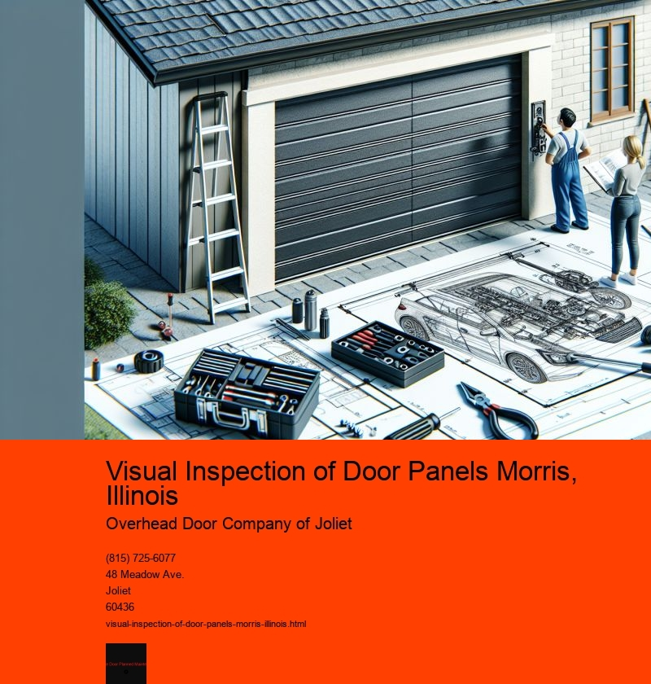

Visual inspection of door panels in Morris, Illinois, is a crucial process in maintaining the quality and safety standards of vehicles and buildings alike. This method involves examining door panels for any defects or irregularities that could compromise their function or aesthetic appeal. In Morris, a town known for its manufacturing prowess and attention to detail, visual inspection plays a vital role in ensuring that products meet the high standards expected by consumers and regulatory bodies.
The process of visual inspection is both an art and a science. It requires a keen eye and a thorough understanding of the materials and construction methods used in door panel production. Inspectors in Morris are often highly trained professionals who have developed an acute sense of detail and a comprehensive knowledge of what constitutes a defect. They look for a range of issues, from minor cosmetic blemishes to significant structural problems that could affect the door panels performance.
In the automotive industry, for instance, door panels are essential components that contribute to the overall safety and comfort of a vehicle. A defect in a door panel could lead to issues such as water leakage, noise infiltration, or even compromised crash protection. Therefore, the visual inspection process is meticulously carried out to ensure that each panel meets stringent quality standards before it reaches the consumer. This meticulous attention to detail is a testament to the industry's commitment to excellence and consumer safety.
Similarly, in the construction industry, door panels are integral to the functionality and aesthetic of a building. A visually inspected door panel can determine the difference between a secure, well-insulated entryway and one that is prone to drafts and security breaches. In Morris, where the climate can vary significantly throughout the year, ensuring that door panels are free of defects is crucial for maintaining energy efficiency and comfort within homes and businesses.
Moreover, visual inspection in Morris is supported by the latest technologies and methodologies. While human inspection is invaluable, advanced tools such as 3D scanners and digital imaging software are increasingly being incorporated into the inspection process. These technologies enhance the accuracy and efficiency of inspections, allowing for more detailed analysis and documentation of any defects. By combining human expertise with technological advancements, Morris is at the forefront of ensuring the highest quality in door panel production.
In addition to its technical aspects, visual inspection of door panels in Morris is also a reflection of the towns commitment to quality craftsmanship and community values. The pride that inspectors take in their work is evident in the meticulous standards they uphold. This dedication not only ensures the safety and satisfaction of consumers but also reinforces Morris's reputation as a center of manufacturing excellence.
In conclusion, the visual inspection of door panels in Morris, Illinois, is a critical process that underscores the importance of quality, safety, and innovation. Through the combination of skilled human inspectors and cutting-edge technology, Morris continues to set high standards in the manufacturing industry. Whether for vehicles or buildings, the meticulous inspection of door panels ensures that they meet the demands of functionality, safety, and aesthetics, reflecting the town's unwavering commitment to excellence.
Checking Hardware Tightness Morris, Illinois
